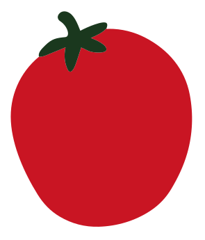

DA CARDITO, CON CARATTERE.
La provincia
ha un altro
sapore.
Due pomodori, una terra sola.
La nostra storia, dentro un barattolo.
PROVINCIALE
Il barattolo sta arrivando…
↔ Trascina per esplorare il barattolo
01 / LE RADICI
Due pomodori.
Una terra sola.
Dentro ogni barattolo ci sono due varietà, scelte una a una per quello che sanno fare: il datterino campano, dolce e carnoso, e il ciliegino della Terra dei Fuochi, quello che nessuno si aspetta.
Datterino campano
Piccolo, allungato, con la buccia sottile e la polpa piena. Cresce dove il pomodoro sa già di casa: matura al sole, si raccoglie a mano, grappolo per grappolo, solo quando è pronto davvero.
Ciliegino della Terra dei Fuochi
Rotondo, succoso, coltivato in un territorio che i telegiornali raccontano solo per i suoi problemi. Ma la terra, quella vera, continua a dare frutti eccellenti — e noi abbiamo deciso di raccontarla per quello, non per il resto.
Perché "provinciale" non è un difetto.
È da lì che veniamo, ed è lì che torniamo ogni raccolta. Mercoleterry nasce apposta per ribaltare il racconto: un territorio giudicato dai titoli di giornale, restituito attraverso quello che sa fare meglio — coltivare bene, con pazienza, senza fretta.
02 / IL RITUALE
Le cose buone
hanno i loro tempi.
Dalla raccolta al barattolo: ogni passaggio è parte della nostra storia.
Raccolta
I pomodori si raccolgono a mano, solo quelli giunti a maturazione. Niente forzature, niente acerbi in mezzo ai maturi.
Lavaggio e selezione
Si scartano i frutti danneggiati, si lavano gli altri e si dividono per varietà: datterini da un lato, ciliegini dall'altro.
Cottura
Cottura lenta, a fuoco basso, il tempo che serve perché la passata si addensi senza perdere il sapore fresco del pomodoro crudo.
Invasettamento
L’ultimo passaggio è il confezionamento: il raccolto prende la forma di un barattolo, pronto per la tua dispensa.
03 / FINO ALL’ULTIMA BUCCIA
Il buono
che resta.
Le bucce che restano dopo la cottura non finiscono nella spazzatura: vengono essiccate e trasformate in crackers di pomodoro, croccanti e saporiti — l'ultima cosa che nasce da ogni raccolta, prima di ricominciare da capo.

da bucciaa crunch.IL POMODORO HA ANCORA QUALCOSA DA DIRE.
Vuoi provarla?
La box Mercoleterry arriva con i due barattoli, l'etichetta che hai appena visto girare e i crackers dalle bucce, per assaggiare tutto il raccolto in una volta.
Le informazioni per ordinare saranno disponibili qui.